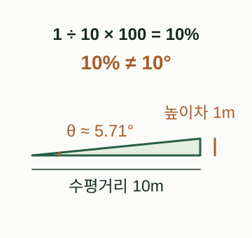
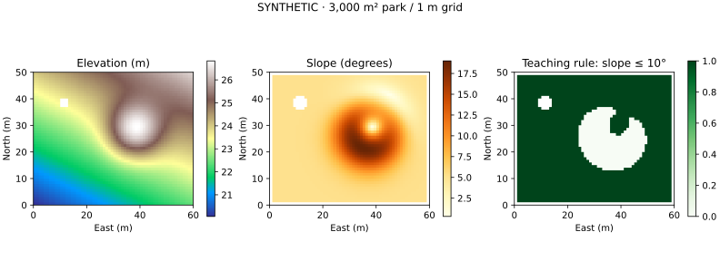

PART 05 / CHAPTER 18
18 · DEM으로 경사도와 식재 후보지 읽기
1m 합성 DEM으로 경사·향·음영을 계산하고 결측값과 면적을 검산합니다.
목표: 경사도·향·음영의 관계를 이해하고 조건을 통과한 면적을 계산합니다. 선수: NumPy 배열, 래스터·CRS. 시간: 60~90분. 자료: 60m × 50m, 1m 셀의 합성 DEM. 실제 측량 성과가 아닙니다.
개념
DEM은 셀마다 높이를 담은 래스터입니다. 배열의 행·열을 지상 좌표로 연결하는 것이 affine transform입니다. 경사도는 높이 변화량을 수평 거리로 나눈 두 방향 기울기를 합쳐 계산합니다.
slope° = atan(sqrt((dz/dx)² + (dz/dy)²)) × 180/π
퍼센트 경사는 100 × tan(slope°)이므로 10°와 10%는 같지 않습니다. 향(aspect)은 가장 낮아지는 방향이며, 이 장은 북=0°, 동=90°를 사용합니다. 평탄면은 향을 정의하지 않습니다. Hillshade는 정한 광원 방향으로 표면을 음영 처리한 값이며 실제 일조시간·수목 그늘 분석은 아닙니다.
경사도는 가파름, 향은 내려가는 방향
경사도: 높이차와 수평거리

높이차 1m / 수평거리 10m의 별도 단면 예입니다. DEM에서는 동서·남북 두 방향 기울기를 합쳐 경사도를 구합니다.
그림 크게 보기 ↗직접 제작한 경사와 향의 개념도입니다. Hillshade는 별도로 정한 광원을 이용한 음영 표현이며 실제 일조시간이 아닙니다.
직접 제작한 교육용 개념도 · 설명 근거: NumPy gradient
왜 필요한가
식재·동선·시공 난이도를 검토할 때 지형은 중요한 입력입니다. 여기서는 경사도 10° 이하를 교육용 후보 조건으로 사용합니다. 이 수치는 설계 기준이나 수종별 생육 적합 임계값이 아닙니다. 토양·배수·토심·일조·접근·설계 제약을 추가해야 식재 적합도 평가로 발전합니다.
핵심 API
| API | 역할 | 확인 항목 |
|---|---|---|
rasterio.open |
래스터·메타데이터 읽기 | CRS, transform, band, dtype, NoData |
read(1, masked=True) |
결측값을 마스크로 읽기 | True가 결측이라는 점 |
numpy.gradient |
두 축의 미분 근사 | 픽셀 간격과 행 방향 |
rasterio.mask.mask |
폴리곤 마스킹·자르기 | 입력 도형 CRS와 출력 transform |
features.rasterize |
면을 셀로 바꾸기 | 셀 중심 / all_touched |
features.shapes |
조건 셀을 폴리곤으로 | 작은 조각·경계 근사 |
Rasterio는 I/O와 격자 정보를 맡고 기울기는 NumPy로 직접 계산합니다. NumPy gradient, Rasterio masks
최소 실행 예제
아래 함수는 중앙차분을 사용합니다. 동서·남북과 중심 셀이 모두 유효할 때만 결과를 남기고 외곽 한 셀은 제외합니다. 북쪽이 위인 회전 없는 격자에서만 지원합니다. 높이와 수평 거리는 모두 m여야 합니다.
import numpy as np
from rasterio.transform import from_origin
def terrain(z, transform):
"""Return slope degrees, downslope aspect N=0/E=90, hillshade 0..1.
Caller must establish metre units in XY and elevation. This function rejects
rotated/south-up grids and removes the outer one-cell boundary.
"""
if (transform.a <= 0 or transform.e >= 0
or transform.b != 0 or transform.d != 0):
raise ValueError("Reproject to a north-up, unrotated metre grid first")
z = np.ma.asarray(z, dtype="float64").filled(np.nan)
if z.ndim != 2 or min(z.shape) < 3:
raise ValueError("Need at least 3 x 3 cells")
# Rows increase southward: negative y spacing recovers northward dz/dy.
dz_dy, dz_dx = np.gradient(z, transform.e, transform.a)
valid = np.isfinite(z)
stencil = np.zeros_like(valid)
stencil[1:-1, 1:-1] = (
valid[1:-1, 1:-1] & valid[:-2, 1:-1] & valid[2:, 1:-1]
& valid[1:-1, :-2] & valid[1:-1, 2:]
)
magnitude = np.hypot(dz_dx, dz_dy)
slope = np.degrees(np.arctan(magnitude))
aspect = (np.degrees(np.arctan2(-dz_dx, -dz_dy)) + 360) % 360
aspect[magnitude < 1e-12] = np.nan # Flat terrain has no downslope direction.
azimuth, altitude = np.radians(315), np.radians(45)
light = np.array([np.sin(azimuth)*np.cos(altitude),
np.cos(azimuth)*np.cos(altitude), np.sin(altitude)])
shade = np.clip((-dz_dx*light[0] - dz_dy*light[1] + light[2])
/ np.sqrt(1 + magnitude**2), 0, 1)
return tuple(np.where(stencil, a, np.nan) for a in (slope, aspect, shade))
실행 검산은 경사가 알려진 평면에서 시작합니다.
row, col = np.indices((10, 10))
z = 20 + 0.1 * col + 0.2 * (9 - row)
slope, aspect, shade = terrain(z, from_origin(0, 10, 1, 1))
print(round(float(slope[5, 5]), 3)) # 12.604 degrees
print(round(float(aspect[5, 5]), 3)) # 206.565 degrees
북쪽으로 높아지는 지형에서 행 번호는 남쪽으로 증가합니다. transform.e가 음수인 이유이며 이 부호를 빼면 향이 뒤집힙니다. 실제 지리좌표 DEM을 m 해상도처럼 다루지 않습니다. DEM이 feet 단위 높이를 쓴다면 높이를 먼저 m로 환산해야 합니다.
조경·도시 실무 예제
전체 실행 파일을 실행하면 3,000㎡ 공원 안에 작은 구릉과 결측 구간을 가진 DEM을 생성하고 후보지를 GPKG로 저장합니다.
python books/python-geospatial/examples/dem_slope.py --out generated/terrain
출력은 dem.tif, slope.tif, candidates.gpkg, terrain.svg, terrain-results.json입니다. 이번 실행에서 유효 경사도 면적은 2,763㎡, 10° 이하 후보면적은 2,334㎡입니다. 이는 전체면적의 77.8%, 유효면적의 약 84.5%입니다. 후보 면적의 분모는 공원 전체면적과 유효 경사도 면적을 구분해 보고합니다. 외곽·결측 구간을 조건 탈락 지형으로 해석하면 안 됩니다.
실제 NGII DEM을 취득할 때 도엽·격자간격·자료기준일·표고기준을 확인합니다. 제공 자료가 IMG라면 설치된 GDAL driver 지원을 확인해 읽거나 GeoTIFF로 변환합니다. 30m DEM 한 셀은 900㎡이므로 작은 공원의 세부 식재 판단에는 지나치게 거칠 수 있습니다. 해상도를 1m로 리샘플해도 실측 정보가 늘지 않습니다.
실측 DEM에서는 대상지에 여유 영역을 둔 뒤 기울기를 계산하고 마지막에 공원으로 잘라내는 순서가 좋습니다. 먼저 공원 경계 밖을 NoData로 만들면 주변 이웃이 사라져 가장자리 경사를 계산하지 못합니다. 다음은 자료 준비 후 적용할 마스킹 구문입니다.
from rasterio.mask import mask
# parks는 미리 읽은 GeoDataFrame, src는 열려 있는 DEM입니다.
parks_dem_crs = parks.to_crs(src.crs)
cropped, new_transform = mask(
src, parks_dem_crs.geometry, crop=True, filled=False
)
# 저장할 때 transform, height, width를 cropped.shape에 맞춰 갱신합니다.
마스크의 all_touched=True는 경계에 조금이라도 닿는 셀을 포함하므로 면적이 달라집니다. Rasterio mask, 벡터↔래스터 features
시각화

세 지도를 같은 범위로 비교합니다. 배포용 정밀 지형분석에서는 Horn 등 알고리즘 차이와 경계 처리의 영향을 검토합니다. 본 중앙차분 예제가 다른 GIS 소프트웨어의 기본 경사도와 완전히 일치한다고 보장하지 않습니다. GDAL slope의 알고리즘·단위 설명
흔한 오류
| 증상 | 원인 → 수정 |
|---|---|
| 결측 부분 주위가 절벽 | NoData를 0으로 변환 → 마스크와 주변 유효성 유지 |
| 향이 반대로 나옴 | 행 증가 방향의 부호 무시 → transform 확인 |
| 경사도가 비정상적으로 큼 | degree/feet/m 혼용 → 수평·수직 단위 통일 |
| 자른 DEM이 엉뚱한 곳에 표시 | 기존 transform 재사용 → 새 transform·shape 저장 |
| 공원 전체가 후보로 보임 | 해상도 부족/임계값만 적용 → 원해상도·평가 조건 재검토 |
| 음영을 일조시간으로 해석 | 고정 광원의 표면 시각화 → 시간별 태양·차폐 분석 별도 수행 |
연습문제
- 알려진 평면의 경사도를 수식으로 계산해 출력과 비교하세요.
- 후보 조건을 5°, 10°, 15°로 바꾸고 후보 면적의 단조 증가 여부를 확인하세요.
- 전체면적 대비 비율과 유효면적 대비 비율이 왜 다른지 설명하세요.
검산 힌트
평면의 두 방향 기울기는 0.1과 0.2입니다. 경사도는 약 12.604°입니다. 후보 비율에는 어떤 분모를 썼는지 적고, NoData 셀을 낮은 적합도 셀로 채우지 않습니다.
다음 단계
19장 Sentinel-2A와 센서·해상도에서 위성영상의 관측 조건을 먼저 이해하고 22장 식생지수로 이어집니다. 지형과 영상을 합칠 때는 CRS뿐 아니라 transform·해상도·행열 크기·시간 기준도 맞춥니다.
출처
확인일: 2026-09-30. 외부 DEM 원본은 이 예제에 포함하지 않았습니다. 위에 연결한 NumPy·Rasterio·GDAL 및 NGII 공식 자료를 사용했습니다. 합성 지형의 1m 해상도와 10° 임계값은 저자의 교육용 설정입니다.